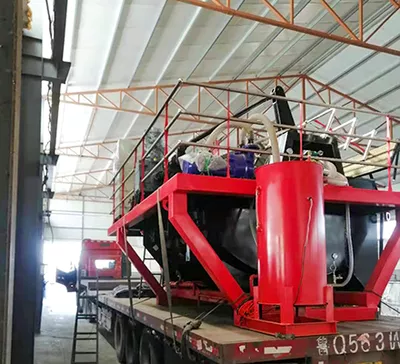

产品中心
管链机的特点
陶瓷真空过滤机工作原理
清洁环保 · 节能高效 · 物料搬运 · 反复利用
全自动陶瓷真空过滤机主要包括渣桶、陶瓷摩擦盘、搅拌器、刮刀、浆料槽和陶瓷 过滤板，在真空的作用下，陶瓷板表面形成一层较厚的颗粒堆积滤层，滤液通过陶瓷板 过滤经陶瓷摩擦盘至真空罐后排出，滤饼干燥后，在卸料区时被刮刀刮下至集料箱，完成作业。

全自动陶瓷真空过滤机主要包括渣桶、陶瓷摩擦盘、搅拌器、刮刀、浆料槽和陶瓷 过滤板，在真空的作用下，陶瓷板表面形成一层较厚的颗粒堆积滤层，滤液通过陶瓷板 过滤经陶瓷摩擦盘至真空罐后排出，滤饼干燥后，在卸料区时被刮刀刮下至集料箱，完成作业。